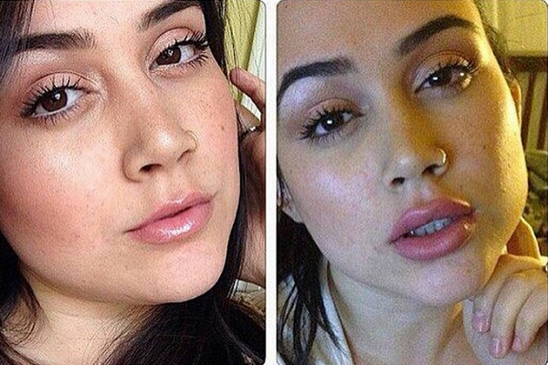
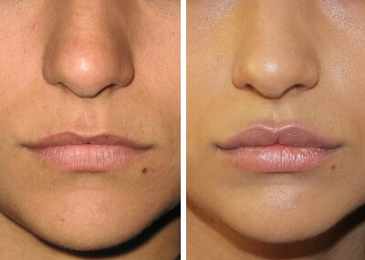
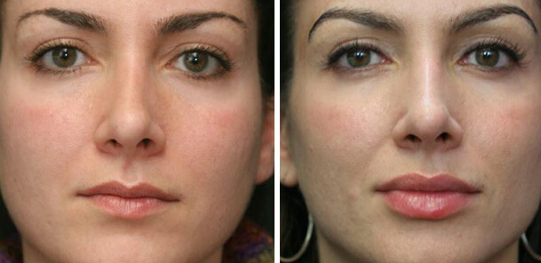

AUMENTO DELLE LABBRA A CASA SENZA INIEZIONI DI ESTETISTE
Pubblicato .2019, 19:51 | Autore: anissamakeup
Ciao a tutti! Parla Anissamakeup!
Ora sarò con voi non solo in formato post su Instagram! Molti vogliono non solo guardare belle foto, ma anche leggere gli articoli da me. Ed ecco, finalmente, il primo materiale sul mio blog!
Oggi vi spiegherò come aumentare le labbra senza l'aiuto di chirurghi plastici ed estetiste. Sono sicura che le informazioni saranno utili per voi!
Prima di tutto, capiamo come le labbra paffute influenzano la percezione complessiva del nostro viso. Le labbra sottili rendono il viso poco sexy e meno attraente. Sembra inespressivo, a causa di ciò che le ragazze devono fare il trucco luminoso. Inoltre, con l'età, le labbra diventano sempre più sottili dalla mancanza di acido ialuronico e dall'idratazione. In precedenza, c'era una sola soluzione — rivolgersi a un estetista e farsi operare…
Se non si fa nulla, il viso diventa opaco e con il trucco sembra imperfetto. Le donne sono pronte a tutto, ma anche dopo l'estetista il risultato è imprevedibile: gli estetisti inesperti possono rovinare tutto il viso! Non farlo, perché esiste NATULIPS. .
Io credo che questo gel dovrebbe avere ogni donna. Farà meglio di qualsiasi aspetto, indipendentemente dalle caratteristiche e dall'età. Gel aumenta le labbra, le rende più paffute e sexy. L'acido ialuronico nella composizione penetra negli strati più profondi della pelle delle labbra e sigilla i tessuti. Gli altri ingredienti naturali rendono la pelle elastica, morbida e attivano il processo di rigenerazione e riparazione dei tessuti. Di conseguenza, le labbra diventano gonfie, la pelle è liscia e la forma è perfetta e simmetrica. In generale, è un miracolo, ma non un mezzo comune. Ecco, ad esempio, quali risultati mi ha inviato una delle follower:

La ragazza ha appena applicato due volte al giorno il gel per aumentare le labbra NATULIPS. L'uso richiede solo 5 minuti, ma l'effetto è super! Tutto grazie alla composizione: i componenti scelti per stimolare il flusso di sangue alle labbra. Vale la pena notare che il mezzo è completamente sicuro: nessun effetto collaterale. Imparagonabile con la visita dall'estetista, che è molto pericolosa!
Come molti altri mezzi, ordino il gel solo sul sito ufficiale dal rappresentante. Vi consiglio di chiudere gli altri siti immediatamente e non andare più su di loro. Il mezzo è molto popolare, quindi le probabilità di incorrere in un falso sono molto alte. Quindi state attenti. E un'altra cosa: i lettori del mio blog avranno uno sconto MOLTO buono! Quindi, pensateci :) A presto!
La mia amica ne ha. Mi spiegava dove ordinare, ma non l'ho mai capito. Grazie per aver spiegato tutto ))
NATULIPS davvero aumenta le labbra. Potete dimenticare delle iniezioni da un estetista, dopo di che si riprende per una settimana. Sono piena d'entusiasmo.


È la centesima volta che sento di questo gel. Qualcun altro ne ha usato?

Si è venuto NATULIPS recentemente, sono entusiasta! Provatelo, non ve ne pentirete. Le labbra sembrano due volte di più grandi. E l'effetto persiste già da un mese!


Che bello! E si vende nei negozi? Se ordinare sul sito, quanto tempo consegnano?
Se hai ordinato sul sito ufficiale, promettono consegnare entro 3-5 giorni, ma in realtà è più presto! Avevo il gel NATULIPS il giorno dopo ordinarlo. Molto presto! Per quanto riguarda i negozi, non ci vado da molto tempo, ordino solo online :)
Grazie, già ordinato. C'è uno sconto oggi, è davvero economico!
Blogger Online


E altri 279 senza avatar...
Vi sono molto grata per lo sconto! Non vedo l'ora che il gel venga da me :)